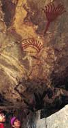
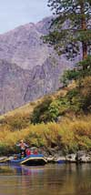

I N H E L L S C A N Y O N

The Snake River winds northward on the border of Idaho and Oregon within the walls of Hells Canyon. Dramatically forged in the Wallowa-Whitman National Forest, Hells Canyon is the deepest gorge in North America. From He Devil, the tallest peak in Idaho's Seven Devils mountain range, eight thousand feet of rocky cliffs and grassy slopes cascade to the deep, green waters of the Snake.
 The Snake River was named after Native Americans of the Shoshone tribe, who painted snake heads on sticks to intimidate other tribes and unwanted visitors. The Snake country is still rich with remnants of their way of life. Pictographs have been preserved naturally under numerous rock ledges, now puzzling symbols for your speculation.
Settlers moved into the canyon as early as 1890, looking for land of their own and space to build a life for their families. They built homesteads, farmed high benches above the river, and ran sheep and cattle from the crest of the canyon to the river below. Abandoned now, these homestead sites have been well preserved by the Forest Service since the 1976 signing of the Hells Canyon National Recreation Area Act by President Gerald Ford. Even today, Hells Canyon is still as remote as it was 100 years ago.
The Snake features powerful, large-volume white water at its finest. Class IV rapids like Wild Sheep and Granite will give you new respect for a river's ferocity. Bernard, No Name, Waterspout, and Rush Creek have steep waves that will douse you and ensure a wonderful time. To add to your enjoyment, we provide a variety of boats for you to try. Hold on to an oar boat for a wild ride while the guide navigates the rapid, or climb into a raft with a guided team of paddlers for a more collaborative effort. One and two person inflatable kayaks are available throughout the trip for you to try on certain sections of the river.
 The canyon holds many species of big game, including mule deer, Rocky Mountain big horn sheep, mountain goat, and an occasional bear, elk, or cougar. You may find a troop of mischievous otter, as well as waterfowl, heron, songbirds, and chukar. A number of bald and golden eagles soar from cliff to cliff and hunt fish out of the river.
Many professional bass fishermen have been impressed by the large quantity of aggressive small mouth bass hiding in the shadowy, still waters of the Snake. Cast a line out into the fast, swirling current and you will be surprised by a hard fighting rainbow trout or steelhead. Even more impressive and exciting are the fresh water white sturgeon residing in deep pools of the river, many of which are over 10 feet in length and as much as 100 years old.
|
Rates and Dates Book a trip Rivers: • Snake • Salmon Boats Equipment Food etc. Map |
or e-mail us